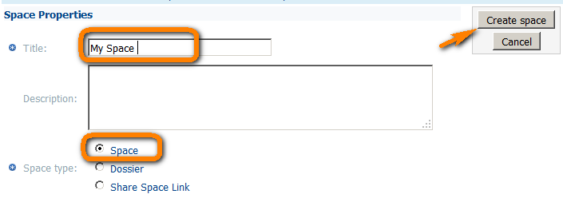
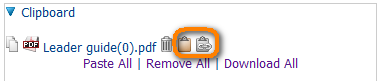
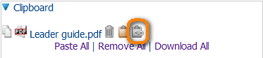

-
How to create a new space
Browse to the library or to the space where you want to create a new space.
Click on Create space
 If you cannot see the feature "Create space", this means that you don't have the appropriate permission, and we suggest that you contact the leaders of your group.
If you cannot see the feature "Create space", this means that you don't have the appropriate permission, and we suggest that you contact the leaders of your group.
Name your space
And click on: Create space
 -
What is a dossier?
A dossier is a space where you can store only links (links to spaces or links to contents)
-
How to upload a new document
Navigate to the library or to the space where you want to upload the new document,
Click on Add content Click on Create space
If you cannot see the feature "Add Content", this means that you don't have the appropriate permission, and we suggest that you contact the leaders of your group.
Browse and select the document you want to upload
Click on Upload
The maximum size authorized is 100 MB
Feel free to change the available properties, disable notifications for this upload, or display more properties:

You can browse and select other documents.
Then click on Finish. -
I have uploaded a new document and the name has been changed
The name and title may be different.
Here is an example of a word document where the name is: FAQ CIRCABC ver3.doc and the title is FAQ (visible on File - Info)
If you cannot see the feature "Add Content", this means that you don't have the appropriate permission, and we suggest that you contact the leaders of your group.
Browse and select the document you want to upload
Click on Upload
Both options can be customized on the library of your Interest Group:
We propose that you check How to customize my navigation columns (name, title, etc.)- (for Leaders) -
How to rename or add a description to an item (Space & Content)
Click on the view details icon next to the item:
From the Actions (left of the page), click on Modify Content Properties,
Change the title, name, description or any other properties
Then click on OK.
If you cannot see the option Modify Content Properties, this means that you don't have the appropriate permission, and we suggest that you contact the leaders of your group
-
How to delete an item (Space & Content)
Click on the view details icon next to the item:
From the Actions (left of the page), click on Delete
Then click on OK.
If you cannot see the option Delete, this may mean that the document is checked out (locked) or you don't have the appropriate permission.
We therefore propose that you check the point: I cannot delete a document, what to do? Or contact the Leaders of your group. -
I cannot delete a document, what can I do?
Documents can be deleted only by Leaders or the user who uploaded the document
If you cannot see the option Delete, this may mean that the document is checked out (locked).
You have therefore first to cancel the checkout, then you will be able to remove it, this can be done by any leader or by the user who made the check out.
From the View detail of the working copy
Click on Undo checkout
This will remove the working copy, and you will be able to remove the original document. -
How to recover deleted items
Go to the Library Administration page (from the Library page click on Administration or from any other page of the group, follow this path: Administration > Go to the Library Administration page)
Click on Manage Deleted Items
Leaders can recover the documents deleted during a given span of time, specific documents (selected from name or content…)
Select a location where to recover the item. Otherwise it will be reinstated to its original location
Then click on Yes -
How to create a multilingual document
A multilingual document can be created in two different ways:
1- When the document is uploaded, tick the option: This will be a multilingual document and chose the language of the first document called the Pivot language,
Upload this document:
Browse, select the first translation and click on upload:
As this document will be a translation of the first one, do not tick the option: This will be a multilingual document.
Add this document as a translation of the first one, select the language and click make:
Then click Finish.
You can upload several translations (Browse, Upload and select languages one by one)
2- Or from the View detail icon of a document available in the library:
From the Actions (left of the page), click on Make Multilingual.
Chose the language of the first document called the Pivot language, tick the option Add translation when this dialog closes and click on OK.
You will be invited to upload translations one by one
Then click Ok.
Once the multilingual mechanism is enabled, from "View detail" you can add new translations at any time.
-
What is the check-out check-in mechanism?
Check out provides you with a working copy where you make the changes you need while the main document remains locked for anybody but you. Once you have made all the changes you wish, you check in which replace the original document by the working copy, create a new version and unlocks the content.
-
How to unlock a document (Users / Leaders)
From the View detail of the working copy related to the locked document:
Click on Undo checkout or Checkin. -
How to copy or move an item (Space & Content)
From the View detail icon:
Click on Cut or Copy, it will add your item to the clipboard.
If you cannot see the option "Cut" this means that you don't have the appropriate permission. Authors cannot move a document uploaded by another member.
Close Details page,
Navigate to the space where you want to move or paste the item,
From the Clipboard Click Paste or Create a link:
 -
How to import (Bulk upload) several documents
This will upload the contents along with their structure (folders and sub-folders)
First build an archive (.ZIP) containing:- The documents to be uploaded
- Optional index which includes the properties of these documents. For more information concerning the index file we refer you to the user guide
7Z format cannot be used; only ZIP is recognized by CIRCABC.
Navigate to the library or to the space where you want to import documents,
Click on Import,
Browse, select the zip file, Upload and click on Import
Your upload will be available as ZIP file in the content part and extracted in a few seconds (depends on the workload). -
How to make the content of the library public
From the main page of your Interest Group, click on "Administration" "Access profiles",
Enable the Registered & Public Access,
Change the permission to Access for library:
The content of the library will be available for anonymous users (anyone).
-
How can I update my document?
Documents can be updated in two different ways:
1- Using the action update (or view detail - Update)
Browse, select the new version, Upload and click on Update,

2- Or using the check-out check-in mechanism
Checkout will lock your document and create a working copy which can only be changed by you,
Update the working copy
Click on Checkin from the working copy
Parameter the Checkin:
Specify if the new version is a minor (1.1) or major version (2.0)
Add optional notes to the new version
And click on OK
This will replace the original document by the working copy, remove the working copy and will unlock the original document.
It is much safer to use the check-out / check-in mechanism when documents may be changed by several users.
-
How to bulk download documents
Click on copy beside the documents you want to download or use the Library Bulk Operation to copy several documents
It will add these documents to the clipboard
Then Click Download All
The allowed size for the bulk download is limited,
we therefore propose that you use the 'simple' download for bigger file: -
How to create links to your documents
Click on copy beside the documents you want to download or use the Library Bulk Operation to copy several documents
This will add this document to the clipboard
Navigate to the space where you want to create a link,
From the Clipboard click on Create a link:
 -
Where can I find the right link to my Interest group?
Navigate to the Interest Group, service, space or to the document for which you want to have a link,
You can also click on the "View detail" icon next to the document,
Right click on Http (Top / Right of the page)
You can then copy the link from Copy Shortcut
-
Where can I find the right link to my Interest group?
Navigate to the Interest Group, service, space or to the document for which you want to have a link,
You can also click on the "View detail" icon next to the document,
Right click on Http (Top / Right of the page)
You can then copy the link from Copy Shortcut
-
Can I share a space with another Interest Group?
The library spaces can be shared with other Interest Groups in the same category as explained below:
Step 1: from Interest Group 1, Leaders or Authors should invite IG 2 to share space,
Step 2: Leaders or Authors of IG 2 make the shared space available in the IG 2.Step 1
From View details icon next to the space that should be shared:- Click on action Manage shared space (right box),
- On top right of the page: Invite IG to share this space,
- Select an Interest Group: you will be able to select an IG from your category (This will be IG2),
- Select Maximum permission : you want to give to IG 2 members
Maximum permission means that if IG 2 members have more rights to the Library they will have only the selected permission to the shared space,
Step 2
From IG 2, Navigate to the library or to the space where you want to create the shared space:- Create Space
- Name your space
- Select Share Space Link on Space type
- Then select the shared space from the list
If the shared space does not appear in the list we recommend retrying step 2 in 15 minutes.
-
How to customize my navigation columns (name, title, etc.) (for Leaders)
Through the "Manage look & feel" features leaders can customize the navigation preferences:
Navigation Preferences and Custom Logo are available on interest group administration page.
Go to the Navigation Preferences
Select which service and type you want to customize
You can then specify mandatory columns (Name, Title or both), optional columns, actions and other options like: Initial Sorting column or Row to display.
CIRCABC
Help
- Administration
 Library
LibraryQuestions about the library
- Newsgroups
 Events
Events Information
Information Notification
Notification Search
Search Known bugs
Known bugs